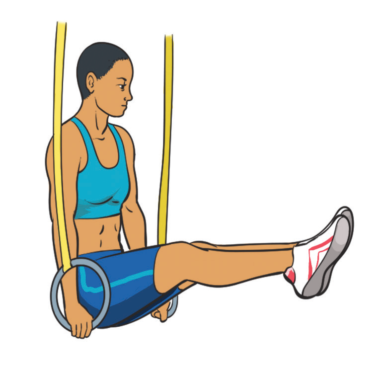

Figure 4.37(b): Support holding on the ring
Hold on the bars
Hold on the bars refers to gripping the gymnastics bars firmly with the hands while keeping the body still, either by hanging below or supporting it above the bars. Some of the common holds on the bar includes front and back support.
(a) Front support: A position on the bar where the gymnast is facing the bar, holding the body in a straight line with arms fully extended.
The following steps will help you practice front support hold on bar:
(i)
Stand in front of the bar (e.g., a horizontal bar or parallel bars);
(ii)
Place both hands on the bar with an overhand grip (palms facing down).
Hands should be shoulder-width apart;
(iii)
Jump up or step from a raised platform to bring your chest above the bar;
(iv)
Keep the arms straight and extended;
(v)
Position the shoulders directly over or slightly in front of the hands;
(vi)
Engage your core to keep the body straight and stable;
(vii)
Legs should be straight, feet together, and toes pointed, figure 4.38(a)
(viii)
Maintain balance and control;